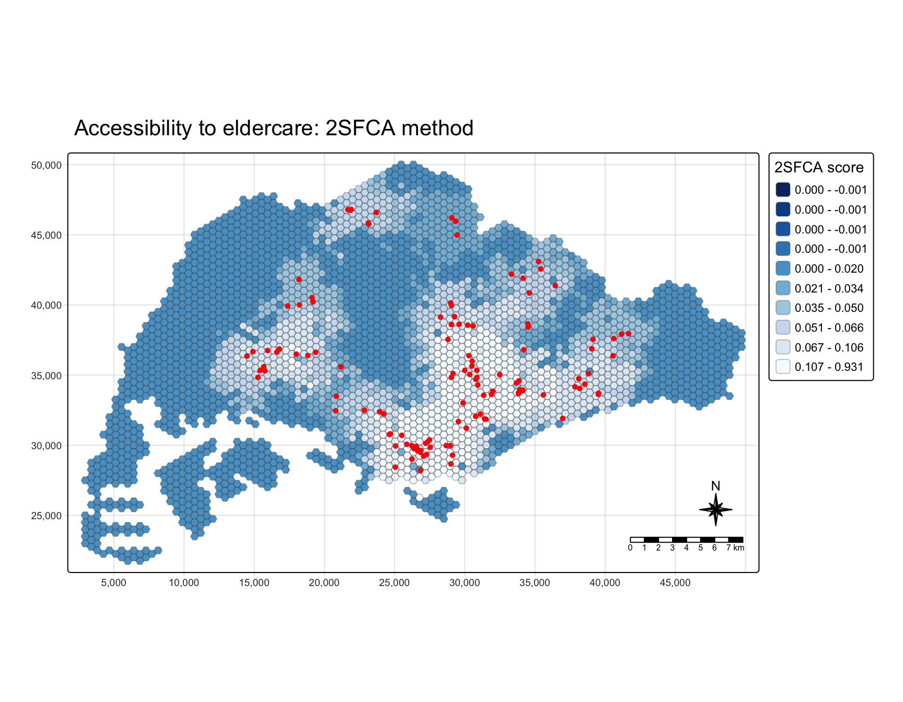
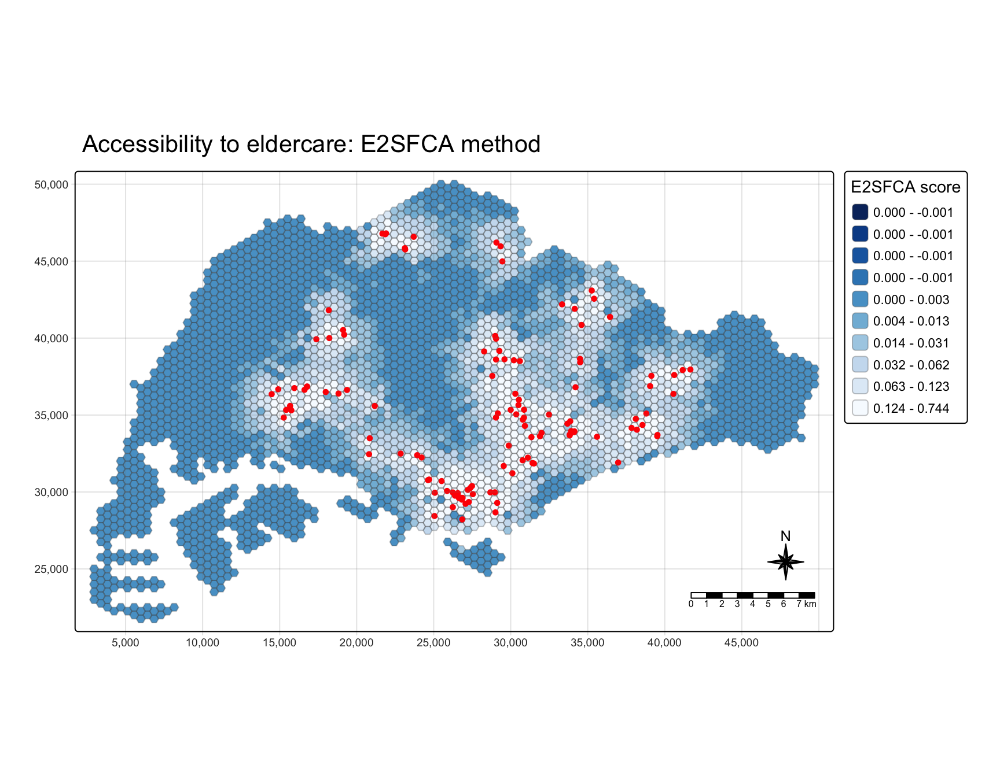
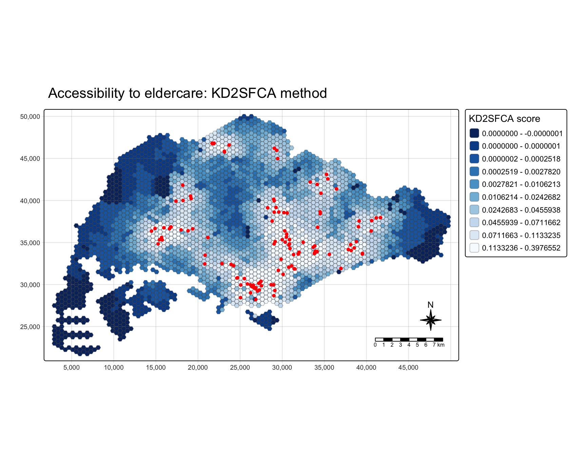
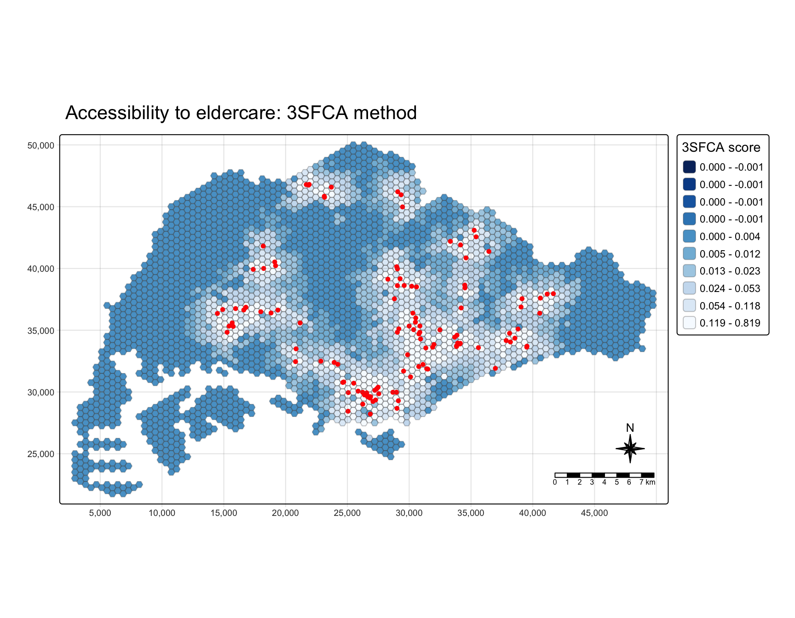

remotes::install_github('uva-bi-sdad/catchment')In-class Exercise 7
Geographic Accessibility with the accessibility and catchment Packages
1 Getting started
1.1 Installing catchment
catchment is not on CRAN, so it is installed from GitHub. This chunk is not run when the page renders.
1.2 Loading the packages
pacman::p_load(sf, tidyverse, tmap, accessibility, catchment)2 Data import
2.1 Geospatial data
mpsz <- st_read(dsn = "data/geospatial",
layer = "MP14_SUBZONE_NO_SEA_PL",
quiet = TRUE) %>%
st_transform(crs = 3414)hexagons <- st_read(dsn = "data/geospatial",
layer = "hexagons",
quiet = TRUE) %>%
st_transform(crs = 3414)eldercare <- st_read(dsn = "data/geospatial",
layer = "ELDERCARE",
quiet = TRUE) %>%
st_transform(crs = 3414)
NoteProjected CRS of the three layers
MP14_SUBZONE_NO_SEA_PL is read in as SVY21, with no EPSG code, while hexagons and ELDERCARE are already SVY21 / Singapore TM (EPSG:3414). st_transform(crs = 3414) gives all three the same CRS. The subzone coordinates do not change, because both names describe the same projection; only the label is updated.
2.2 Origin-destination matrix
ODMatrix <- read_csv("data/aspatial/OD_Matrix.csv", skip = 0)3 Data preparation
3.1 Supply and demand fields
eldercare <- eldercare %>%
select(fid) %>%
mutate(capacity = 100)hexagons <- hexagons %>%
select(fid) %>%
mutate(demand = 100) %>%
rename(id = fid)3.2 Travel matrix for the accessibility package
ODMatrix_tidied <- ODMatrix %>%
select(origin_id, destination_id, total_cost) %>%
rename(from_id = origin_id,
to_id = destination_id,
dist = total_cost)4 Distance to the nearest eldercare centre
dist2closest <- cost_to_closest(
travel_matrix = ODMatrix_tidied,
land_use_data = hexagons,
opportunity = "demand",
travel_cost = "dist",
n = 1,
group_by = character(0),
active = TRUE,
fill_missing_ids = TRUE
)
WarningChoosing land_use_data
The destinations in this chunk are eldercare centres, so land_use_data should be eldercare and opportunity should be "capacity". The original code still gives the correct distances only because the eldercare ids (1 to 133) are also hexagon ids.
Corrected version
dist2closest <- cost_to_closest(
travel_matrix = ODMatrix_tidied,
land_use_data = eldercare %>% rename(id = fid),
opportunity = "capacity",
travel_cost = "dist",
n = 1
)5 Two-step floating catchment area (2SFCA) family
NoteWhy the catchment package
catchment has more two-step tools than SpatialAcc, used in Hands-on Exercise 7. SpatialAcc offers 2SFCA and KD2SFCA only, while catchment also offers E2SFCA, 3SFCA and M2SFCA.
5.1 Distance matrix for the catchment package
distmat <- ODMatrix %>%
select(origin_id, destination_id, total_cost) %>%
spread(destination_id, total_cost) %>%
select(c(-c('origin_id')))
distmat_km <- as.matrix(distmat/1000)
NoteRow and column order
The rows of distmat_km are the hexagons and the columns are the eldercare centres, in the same order as hexagons and eldercare. catchment_ratio() matches them by position, so the order must agree.
5.2 2SFCA
df_2sfca <- catchment_ratio(
consumers = hexagons$demand,
providers = eldercare$capacity,
cost = distmat_km,
max_cost = 5) %>%
as.data.frame() %>%
rename("2SFCA" = ".")
NoteWhy as.data.frame()
catchment_ratio() returns a plain vector. as.data.frame() turns it into a data frame, so it is listed under Data in RStudio’s Environment tab and can be opened as a table. The new column is named ., and rename() changes the name to 2SFCA.
5.2.1 Map of 2SFCA accessibility
hexagon_2sfca <- bind_cols(hexagons, df_2sfca)
mapex <- st_bbox(hexagons)
tm_shape(hexagon_2sfca, bbox = mapex) +
tm_polygons(fill = "2SFCA",
fill.scale = tm_scale_intervals(
style = "quantile",
n = 10,
values = "-brewer.blues"),
fill.legend = tm_legend(title = "2SFCA score"),
col_alpha = 0.3) +
tm_shape(eldercare) +
tm_dots(size = 0.3,
fill = "red",
col = "black") +
tm_title("Accessibility to eldercare: 2SFCA method") +
tm_layout(frame = TRUE) +
tm_compass(type="8star", size = 2) +
tm_scalebar() +
tm_grid(alpha = 0.2)
NoteWhy -brewer.blues
The minus sign reverses the palette, so the darkest blue marks the lowest scores. The hexagons with the poorest access to eldercare are the ones that stand out on the map.
NoteWhy quantile classes
Quantile classes put the same number of hexagons in each colour, so a few hexagons with very high scores (outliers) do not squeeze all the others into one or two colours.
5.3 Enhanced 2SFCA (E2SFCA)
step_weights <- list(c(5, .01), c(4, .05), c(3, .1), c(2, .4), c(1, 1))
df_e2sfca <- catchment_ratio(
consumers = hexagons$demand,
providers = eldercare$capacity,
cost = distmat_km,
weight = step_weights) %>%
as.data.frame() %>%
rename("E2SFCA" = ".")
NoteStep weights
Each pair in step_weights is a distance limit in km and a weight. Centres within 1 km get the highest weight (1), and the weight drops at each step out to 5 km. Centres beyond 5 km get 0.
| Distance to centre | Weight |
|---|---|
| up to 1 km | 1 |
| 1 to 2 km | 0.4 |
| 2 to 3 km | 0.1 |
| 3 to 4 km | 0.05 |
| 4 to 5 km | 0.01 |
| beyond 5 km | 0 |
5.3.1 Map of E2SFCA accessibility
hexagon_e2sfca <- bind_cols(hexagons, df_e2sfca)
tm_shape(hexagon_e2sfca, bbox = mapex) +
tm_polygons(fill = "E2SFCA",
fill.scale = tm_scale_intervals(
style = "quantile",
n = 10,
values = "-brewer.blues"),
fill.legend = tm_legend(title = "E2SFCA score"),
col_alpha = 0.3) +
tm_shape(eldercare) +
tm_dots(size = 0.3,
fill = "red",
col = "black") +
tm_title("Accessibility to eldercare: E2SFCA method") +
tm_layout(frame = TRUE) +
tm_compass(type="8star", size = 2) +
tm_scalebar() +
tm_grid(alpha = 0.2)
NoteWhy the E2SFCA map differs from 2SFCA
Beyond 2 km the step weights are very small, so mainly centres within 2 km (weights 1 and 0.4) raise a hexagon’s score. For example, the smallest total_cost in ODMatrix is 36.9 m, from hexagon 2251 to eldercare centre 26, so that centre counts with the full weight of 1.
5.4 Kernel density (Gaussian) 2SFCA (KD2SFCA)
df_kd2sfca <- catchment_ratio(
consumers = hexagons$demand,
providers = eldercare$capacity,
cost = distmat_km,
weight = "gaussian") %>%
as.data.frame() %>%
rename("KD2SFCA" = ".")
NoteChoosing the kernel function
The weight argument controls which distance decay function is used. weight = "gaussian" gives a smooth bell-shaped decay. Other names that catchment_ratio() accepts include:
weight = |
Decay with distance |
|---|---|
"gaussian" |
smooth bell-shaped curve |
"exponential" |
falls quickly, then flattens |
"linear" |
falls in a straight line to 0 at 2 km |
5.4.1 Map of KD2SFCA accessibility
hexagon_kd2sfca <- bind_cols(hexagons, df_kd2sfca)
tm_shape(hexagon_kd2sfca, bbox = mapex) +
tm_polygons(fill = "KD2SFCA",
fill.scale = tm_scale_intervals(
style = "quantile",
n = 10,
values = "-brewer.blues"),
fill.legend = tm_legend(title = "KD2SFCA score"),
col_alpha = 0.3) +
tm_shape(eldercare) +
tm_dots(size = 0.3,
fill = "red",
col = "black") +
tm_title("Accessibility to eldercare: KD2SFCA method") +
tm_layout(frame = TRUE) +
tm_compass(type="8star", size = 2) +
tm_scalebar() +
tm_grid(alpha = 0.2)
NoteWhy the KD2SFCA map shows clearer differences
With the Gaussian kernel, the weight goes down smoothly with distance. It does not drop to 0 at 5 km as in 2SFCA and E2SFCA, so hexagons more than 5 km from every centre still get a small score. There are fewer 0 scores, and the map separates areas more clearly.
5.5 Three-step floating catchment area (3SFCA)
df_3sfca <- catchment_ratio(
consumers = hexagons$demand,
providers = eldercare$capacity,
cost = distmat_km,
step_weights,
normalize_weight = TRUE) %>%
as.data.frame() %>%
rename("3SFCA" = ".")
NoteWhy normalize the weights
Locations differ in demand, and centres differ in supply: a small centre may take only 50 people and a large one 200. In 3SFCA the step weights are applied first, and then normalized, so that each hexagon’s weights are divided by its total weight across the centres it can reach. This extra step gives 3SFCA its name, and it makes the weights more consistent to compare across locations. In this exercise every centre has the same capacity of 100. Wan, Zou and Sternberg (2012) introduced the method.
5.5.1 Map of 3SFCA accessibility
hexagon_3sfca <- bind_cols(hexagons, df_3sfca)
tm_shape(hexagon_3sfca, bbox = mapex) +
tm_polygons(fill = "3SFCA",
fill.scale = tm_scale_intervals(
style = "quantile",
n = 10,
values = "-brewer.blues"),
fill.legend = tm_legend(title = "3SFCA score"),
col_alpha = 0.3) +
tm_shape(eldercare) +
tm_dots(size = 0.3,
fill = "red",
col = "black") +
tm_title("Accessibility to eldercare: 3SFCA method") +
tm_layout(frame = TRUE) +
tm_compass(type="8star", size = 2) +
tm_scalebar() +
tm_grid(alpha = 0.2)
Note3SFCA compared with E2SFCA
3SFCA uses the same step weights as E2SFCA. After the weights are normalized, the class values in the legend change slightly, so the two maps are worth comparing.
5.6 Modified 2SFCA (M2SFCA)
df_m2sfca <- catchment_ratio(
consumers = hexagons$demand,
providers = eldercare$capacity,
cost = distmat_km,
step_weights,
adjust_providers = function(w) w^2) %>%
as.data.frame() %>%
rename("M2SFCA" = ".")5.6.1 Map of M2SFCA accessibility
hexagon_m2sfca <- bind_cols(hexagons, df_m2sfca)
tm_shape(hexagon_m2sfca, bbox = mapex) +
tm_polygons(fill = "M2SFCA",
fill.scale = tm_scale_intervals(
style = "quantile",
n = 10,
values = "-brewer.blues"),
fill.legend = tm_legend(title = "M2SFCA score"),
col_alpha = 0.3) +
tm_shape(eldercare) +
tm_dots(size = 0.3,
fill = "red",
col = "black") +
tm_title("Accessibility to eldercare: M2SFCA method") +
tm_layout(frame = TRUE) +
tm_compass(type="8star", size = 2) +
tm_scalebar() +
tm_grid(alpha = 0.2)6 Comparing the methods
ImportantUse the same legend classes when comparing methods
Each map above uses its own quantile classes, so the class values change from one method to the next. The colours look different, but it is not clear which values changed. To compare methods properly, for example in a take-home exercise:
- use a custom legend with the same fixed classes on every map, for example “greater than 0.7” and then steps downwards, so that all maps share one scale;
- or compare the distributions with a statistical plot, such as the boxplots in the hands-on exercise.